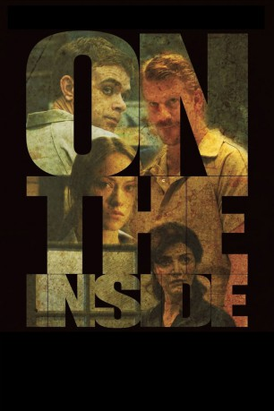

#8769 In Northwood
Alternativ: On the Inside
 
 IMDB-Wertung: 5.3 / 10
IMDB-Wertung: 5.3 / 10  Metascore: 0
Metascore: 0 
Allen wird wegen Mordes an dem mutmaßlichen Vergewaltiger seiner Frau in die Psychiatrie eingewiesen. Dort lernt er die manisch depressive Mia kennen. Zwischen beiden entsteht eine tiefe Bindung. Ein Aufstand bedroht jedoch Allens Leben.
Jahr: 2011
Dauer: 86 Minuten
FSK: 12
Land: USA Studio: Anchor Bay EntertainmentTonspuren: DD2.0 - ,
Untertitel:
Auflösung: 1080p (1920x1080) Größe: 6809 MB
Genre: Thriller, Drama
Regisseur: D.W. Brown
Drehbuch: D.W. Brown
Soundtrack: Haim Mazar
Darsteller:
 Nick Stahl als Allen Meneric
Nick Stahl als Allen Meneric Dash Mihok als Carl Tarses
Dash Mihok als Carl Tarses Olivia Wilde als Mia Conlon
Olivia Wilde als Mia Conlon Pruitt Taylor Vince als Ben Marshal
Pruitt Taylor Vince als Ben Marshal Shohreh Aghdashloo als Dr. Lofton
Shohreh Aghdashloo als Dr. Lofton- Tariq Trotter als Tom Bogotus
- Daniel Franzese als Paul Warren
 Daniel London als Nathan Parks
Daniel London als Nathan Parks Joanne Baron als Mrs. Standings
Joanne Baron als Mrs. Standings Haley Webb als Allen's Girlfriend
Haley Webb als Allen's Girlfriend- D.W. Brown als Bearded Man
 Rick Applegate als Policeman
Rick Applegate als Policeman- Kyle McCaffrey als Young Allen
- Leslie Merrill als Allen's Mother
- Rick Williamson als Judge
 Aaron Bernard als Inmate (uncredited)
Aaron Bernard als Inmate (uncredited) Jack Erdie als Fighting Inmate (uncredited)
Jack Erdie als Fighting Inmate (uncredited) William Kania als Inmate (uncredited)
William Kania als Inmate (uncredited) Phil Nardozzi als Insane Inmate (uncredited)
Phil Nardozzi als Insane Inmate (uncredited) Brenna Roth als Black Haired Woman (uncredited)
Brenna Roth als Black Haired Woman (uncredited)- Amy Attaway als Female Doctor
- George Drennen als Mason
- Lissa Brennan als Lisa
- Doyle Hanks als Weeping Man
- Eric Jaeger als Young Man
- Leslie Howard als Eloy
- Coleman Wilson als Allen's Brother
- Troy Fidis als Guard on PA
- Lori Tritel als Female Attorney
- Eric Ziemann als Male Attorney
- Brian Alley als Prison Guard (uncredited)
- Nicholas Balzer als Prison Guard (uncredited)
- Carl Clemons als Maximum Security Prisoner (uncredited)
- Lamar Darnell Fields als Inmate (uncredited)
- Stephanie Macdougall als Inmate (uncredited)
- Sean P. McCarthy als Strait-jacketed Inmate (uncredited)
- Jackson Nunn als Inmate (uncredited)
- Jason Planitzer als Cubby (uncredited)
Datei: X:\2011(G-M)\In Northwood (2011, FSK12, 1920x1080).mkv seit 27.04.2018
Festplatte: HD 2011(G-Z)
 Es gibt insgesamt 100 Filme in der Gruppe '2011(G-M)'
Es gibt insgesamt 100 Filme in der Gruppe '2011(G-M)'